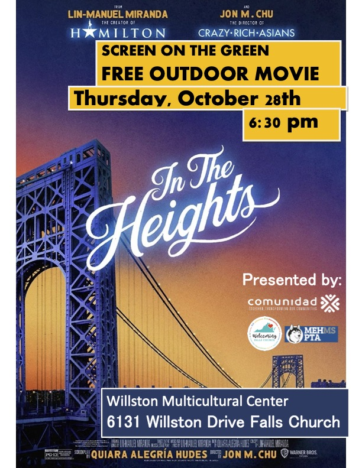

<style>
@media (min-width: 1050px) {
    .full {
        max-width: 75%;
        min-width: 75%;
        margin-left: auto;
        margin-right: auto;
        display: block;
    }
}
</style>
<section>
    <br>
    <p><strong>Celebrating Community: Our Stories | A Film Series</strong> continues with the film “In the Heights”, outdoors on the soccer field at the Willston Multicultural Center, 6131 Willston Dr, Falls Church, VA 22044, Thursday, October 28, at 6:30pm. Welcoming Falls Church thanks Comunidad and the Henderson Middle School PTA for their co-sponsorship of this great film, and we invite the community to join us for a memorable evening!</p>
    
    <br>
    <h1>Welcoming Falls Church</h1>
    <p><strong>Building a community of neighbors.</strong> Our goals are hospitality toward immigrants and refugees and opportunity for us all. We believe that by engaging locally we can overcome divisions and reinforce some of our society's greatest strengths. Inspired by a national movement called Welcoming America, we are grassroots, apolitical, and public-private in character. We invite you to learn more and to join us.</p>
    </div>
</section>
